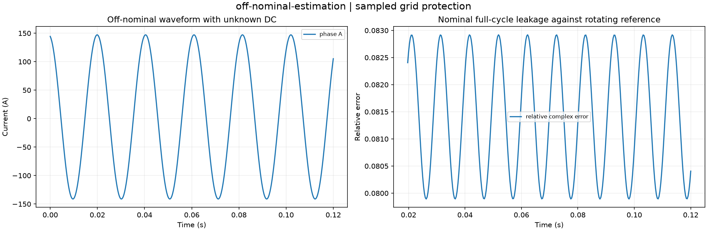

Reproducible sampled grid protection. Units and field components are printed on the scientific axes. RMS phasors use exp(+i omega t); terminal currents point into the protected line.
Sealed numeric archive | Summary CSV | Physical parameters | Run request | Source and environment

| estimated_frequency_hz | 48.70000033348004 |
|---|---|
| fitted_phasor_relative_error | 1.2573503930975404e-07 |
| frequency_error_hz | 3.3348003825039996e-07 |
These are simulations, not hardware measurements. Network-model, measurement, timing and statistical uncertainty require distinct convergence checks. Singular or unilluminated data use explicit masks.
Source revision: b6841e1232dcac6db840a727ea4b1e98340b98a7.
Dirty checkout: False.
Configuration SHA-256: c21493007bc4fa04f262f43a2ac15aa83d42e524cea84f4433df6e2518782288.
Replay preserves original source and parameter provenance. SHA-256 manifests detect changed bytes; they are unsigned integrity records, not certificates of physical validity.